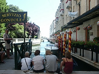
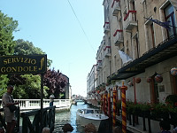
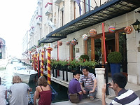
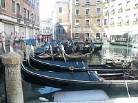
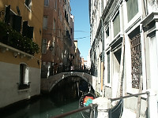
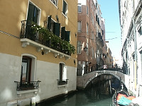
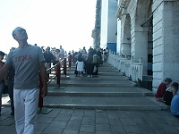
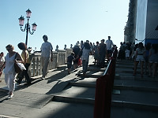
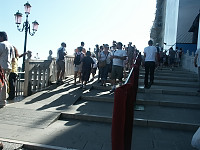
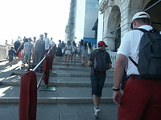

Johnnie a bit sleepy after a full meal. |
Obie after dinner. |

A typical canal in Venice. |

Venice canal - one of many |
|

A taxi stand. |

Gondolas awaiting passengers. |

Typical canal. |

See Venice soon as it is both sinking and having water rising due to global warming. |
|

Staircase over a bridge to St. Mark's Square. |

Luckily, the city is trying to build ramps so some stairs can be avoided. |

Ramp and stairs on the main bridge to St. Mark's Square from our hotel. |

The staircase and the ramp over the bridge. |